CSS
1. CSS介绍¶
层叠样式表(英文全称：Cascading Style Sheets)是一种用来表现HTML（标准通用标记语言的一个应用）或XML（标准通用标记语言的一个子集）等文件样式的计算机语言。CSS不仅可以静态地修饰网页，还可以配合各种脚本语言动态地对网页各元素进行格式化，CSS 能够对网页中元素位置的排版进行像素级精确控制，支持几乎所有的字体字号样式，拥有对网页对象和模型样式编辑的能力。
首先强调一点CSS在前端页面中的地位。HTML代码写完后。CSS对HTML进行修缮，也就是传说的"美容师"。如我们在浏览器上看到的页面中的字体颜色，字体大小，段落格式，图片，视频显示，而Js的作用就是我们让页面动起来。比如 我们鼠标点击，拖动等，动作都是js起到作用。
2. CSS 引入¶
2.1 特性¶
概念：层叠样式表或者级联样式表（Cascading style sheets）
层叠：CSS的特性
作用：设置网页结构样式(改变html标签样式)，通过CSS给HTML标签属性达到改变标签样式。
2.2 引入方式¶
2.2.1 内嵌方法¶
css样式写在html文件head内。
<head>
<style type="text/css">
样式表内容|CSS代码
</style>
</head>
2.2.2 外链方法¶
css样式为单独的文件，然后html文件链接到此css文件，极力推荐这样写。
<head>
<link rel="stylesheet" href="header.css">
<head>
2.2.3 行内方法¶
直接写在标签内的样式。
<body>
<h1 style="font-size:30px; color:red;">博客</h1>
</body>
3. 选择器¶
在 CSS 中，选择器是一种模式，用于选择需要添加样式的元素。选择器 {属性：值;} 选择器：选择标签的过程
- 标签选择器
- 类选择器
- D选择器
- 通配符选择器
交集选择器（标签指定式）
- 后代选择器
- 自带选择器
- 并集选择器
补充选择器 1. 伪类选择器 1. 属性选择器 1. 伪元素选择器
3.1 选择器介绍¶
"CSS" 列指示该属性是在哪个 CSS 版本中定义的。（CSS1、CSS2 还是 CSS3。
| 选择器 | 例子 | 例子描述 | CSS版本 |
|---|---|---|---|
| .class | .intro 选择 | class="intro" 的所有元素。 | 1 |
| #id | #firstname 选择 | id="firstname" 的所有元素。 | 1 |
| * | * | 选择所有元素。 | 2 |
| element | p | 选择所有 元素。 |
1 |
| element,element | div,p | 选择所有 元素和所有 元素。 |
1 |
| element element | div p | 选择 元素内部的所有 元素。 |
1 |
| element>element | div>p | 选择父元素为 元素的所有 元素。 |
2 |
| element+element | div+p | 选择紧接在 元素之后的所有 元素。 |
2 |
| [attribute] | [target] | 选择带有 target 属性所有元素。 | 2 |
| [attribute=value] | [target=_blank] | 选择 target="_blank" 的所有元素。 | 2 |
| [attribute~=value] | [title~=flower] | 选择 title 属性包含单词 "flower" 的所有元素。 | 2 |
| [attribute | =value] | [lang | =en] |
| :link | a:link | 选择所有未被访问的链接。 | 1 |
| :visited | a:visited | 选择所有已被访问的链接。 | |
| :active | a:active | 选择活动链接。 | 1 |
| :hover | a:hover | 选择鼠标指针位于其上的链接。 | 1 |
| :focus | input:focus | 选择获得焦点的 input 元素。 | 2 |
| :first-letter | p:first-letter | 选择每个 元素的首字母。 |
1 |
| :first-line | p:first-line | 选择每个 元素的首行。 |
1 |
| :first-child | p:first-child | 选择属于父元素的第一个子元素的每个 元素。 |
2 |
| :before | p:before | 在每个 元素的内容之前插入内容。 |
2 |
| :after | p:after | 在每个 元素的内容之后插入内容。 |
2 |
| :lang(language) | p:lang(it) | 选择带有以 "it" 开头的 lang 属性值的每个 元素。 |
2 |
| element1~element2 | p~ul | 选择前面有 元素的每个
|
3 |
| [attribute^=value] | a[src^="https"] | 选择其 src 属性值以 "https" 开头的每个 元素。 | 3 |
| [attribute$=value] | a[src$=".pdf"] | 选择其 src 属性以 ".pdf" 结尾的所有 元素。 | 3 |
| [attribute*=value] | a[src*="abc"] | 选择其 src 属性中包含 "abc" 子串的每个 元素。 | 3 |
| :first-of-type | p:first-of-type | 选择属于其父元素的首个 元素的每个 元素。 |
3 |
| :last-of-type | p:last-of-type | 选择属于其父元素的最后 元素的每个 元素。 |
3 |
| :only-of-type | p:only-of-type | 选择属于其父元素唯一的 元素的每个 元素。 |
3 |
| :only-child | p:only-child | 选择属于其父元素的唯一子元素的每个 元素。 |
3 |
| :nth-child(n) | p:nth-child(2) | 选择属于其父元素的第二个子元素的每个 元素。 |
3 |
| :nth-last-child(n) | p:nth-last-child(2) | 同上，从最后一个子元素开始计数。 | 3 |
| :nth-of-type(n) | p:nth-of-type(2) | 选择属于其父元素第二个 元素的每个 元素。 |
3 |
| :nth-last-of-type(n) | p:nth-last-of-type(2) | 同上，但是从最后一个子元素开始计数。 | 3 |
| :last-child | p:last-child | 选择属于其父元素最后一个子元素每个 元素。 |
3 |
| :root | :root | 选择文档的根元素。 | 3 |
| :empty | p:empty | 选择没有子元素的每个 元素（包括文本节点）。 |
3 |
| :target | #news:target | 选择当前活动的 #news 元素。 | 3 |
| :enabled | input:enabled | 选择每个启用的 元素。 | 3 |
| :disabled | input:disabled | 选择每个禁用的 元素 | 3 |
| :checked | input:checked | 选择每个被选中的 元素。 | 3 |
| :not(selector) | :not(p) | 选择非 元素的每个元素。 |
3 |
| ::selection | ::selection | 选择被用户选取的元 | 3 |
3.2 标签选择器¶
Html标签名 {属性：值;} ，常用的属性:
| 属性 | 描述 |
|---|---|
| color | 前景色（文字颜色） |
| backgroud-color | 背景色 |
| font-size | 设置文字大小 |
| width | 设置宽度 |
| height | 设置高度 |
| text-align left | right |
| text-indent | 首行缩进 |
| text-indent: 2em; | 首行缩进两个汉字 |
| text-indent: 20px; | 首行缩进20像素 |
3.3 单位介绍¶
| 属性 | 描述 |
|---|---|
| px | 像素 20px----20像素点 |
| em | 1em=1个文字大小，nem=n个文字大小 |
3.4 颜色¶
3.4.1 直接使用颜色的名词¶
- background-color: red;
3.4.2 使用16进制表示¶
- background-color: #000000;
3.3.3 使用三原色表示¶
rgb
r: red (0-255)取值范围
g:green (0-255)取值范围
b:blue (0-255)取值范围
background-color: rgb(23,56,89);
1. 半透明：
background-color: rgba(23,56,89,0.2); #最后一位取值0到1
2. 使用opacity实现半透明
background-color: red;
opacity: 0.5; 会让文字也半透明
background-color: red; opacity: 0.5; filter: Alpha(opacity=50);
3.5 类选择器¶
首先，类 选择器前面有一个 . 号 也称为棋点号。
3.5.1 自定义类名¶
自定义类名 {属性：值;} - 通过.自定义类名 定义一个类样式 .p_red{ }
3.5.2 调用¶
标签通class属性调用类样式
<p class="p_red">文字2</p>
.p_red{
color: red;
}
<p class="p_red">文字2</p>
3.5.3 特点¶
- 一个样式可以被多个标签调用
<p class="p_red">文字2</p> <div class="p_red">文字2</div>
<div class="p_red public">文字2</div>
3.5.4 命名规范¶
- 顾名思义 就是根据作用起对应的名字。比如排头滚动的标语，可以选择banner
- 通用类名
| 中文名 | 英文名 |
|---|---|
| 头 | header |
| 内 容 | content/container |
| 尾 | footer |
| 导 航 | nav |
| 侧 栏 | sidebar |
| 栏 目 | column |
| 标 志 | logo |
| 广 告 | banner |
| 热 点 | hot |
| 新 闻 | news |
| 下 载 | download |
| 菜 单 | menu |
| 搜 索 | search |
| 页 脚 | footer |
| 版 权 | copyright |
| 滚 动 | scroll |
| 内 容 | content |
| 友情链接 | friendlink |
| 子导 航 | subnav |
| 页面主体 | main |
| 左中 右 | left right center |
| 登录 条 | loginbar |
| 页面外围控制整体布局宽度 | wrapper |
以下是不推荐的写法
- 不能使用以数字开头
- 不推荐使用中文定义类名（虽然可以使用）
- 不能使用以特殊字符开头的
- 个人不推荐使用标签名作为定义类名 比如div作为class值的
3.6 ID 选择器¶
3.6.1 ID选择器语法¶
在某些方面，ID 选择器类似于类选择器，不过也有一些重要差别。首先，ID 选择器前面有一个 # 号 - 也称为棋盘号或井号。语法如下
语法： #自定义名称 {属性: 值;}
3.6.2 使用¶
- 首先通过#自定义名称 定义一个id选择器样式
#color {
color: red;
}
- 标签通过id属性调用id样式
<div class="one" id="color">taotaolinux</div>
- ID选择器和类选择器区别
1. 页面中的ID选择器值必须唯一，而类选择器可以重复。
2. 一个标签只能调用一个样式
<div class="p_red public">taotaolinux</div> 是对的
<div id="p_red public">taotaolinux</div> 是错误
3.7 通配符选择器¶
通配选择器用一个星号（*）表示。单独使用时，这个选择器可以与文档中的任何元素匹配，就像一个通配符。 语法
语法： * {属性: 值;.....}
* {
color: red;
}
3.7 font 属性介绍¶
1. font-size 文字大小
2. font-weight 文字加粗
1. normal 字体正常
2. 700 文字加粗
3. bold 文字加粗
4. 400 正常显示
3. font-style 文字斜体
1. normal 正常
2. italic 斜体
4. font-family
1. font-family: "微软雅黑";
2. 文字字体表示方式
1. 直接设置字体对应名称，（宋体，黑体）
2. 设置字体对应的英文方式
3. 设置字体对应的unicode的编码
4. font-family 一次可以设置多个字体，字体字体之间用逗号隔开
5. line-height 设置文字行高
3.8 font 属性连写¶
1. font: font-weight font-style font-size/line-height font-family font: 700 italic 30px/20px 微软雅黑;
注意
1. 属性联写中必须设置font-size font-family 2. 属性联写中font-szie必须放到font-family之前 3. 如果font属性联写中的属性都要设置，那么按照上述属性去设置
3.9 复合选择器¶
复合选择器是由两个或多个基础选择器，通过不同的方式组合而成的,目的是为了可以选择更准确更精细的目标元素标签
3.9.1 标签指定式选择器¶
语法：
标签名.类名 {属性: 值;} 或者 标签名#id名 {属性: 值;}
既。。。。又。。。。
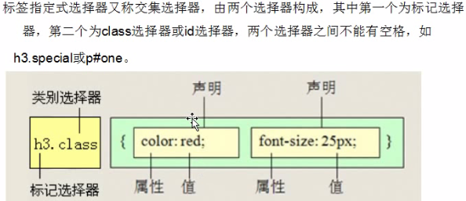
div.one{
color: red;
}
<div class="one">div中的文字</div>
<p class="one">p中的文字</p>
<div class="two">cmz</div>
3.9.2 后代选择器¶
后代选择器（descendant selector）又称为包含选择器。后代选择器可以选择作为某元素后代的元素。
语法：
选择器 选择器 ...{属性: 值;}
注意
1. 后代选择器标签之间必须是嵌套关系 2. 选择器与选择器之间必须使用空格隔开 3. 后代选择器只能选中后代元素(所有后代)
div span {
color: red;
}
<div class="one">
<span>文字1</span>
<p>
<span>文字2</span>
</p>
</div>
<p class="tree">没有父元素p</p>
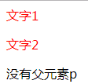
3.9.3 并集选择器¶
CSS并集选择器也叫群选择器，是由多个选择器通过逗号连接在一起的，这些选择器分别是：标签选择器、类选择器或id选择器等。
在声明各种CSS选择器时，如果某些选择器的风格完全相同，或者部分相同，便可以利用并集选择器同时声明这些风格相同的CSS选择器。
并集选择器允许同时给多个选择器应用同一种样式。
语法：
选择器,选择器...{属性: 值;}
注意
1. 选择器与选择器之间是有逗号隔开 2. 选择器标签之间的结构可以是任何一种关系
div,p,span {
color: blue;
}
<div class="one">123</div>
<p class="one">456</p>
<span>adsdsd</span>
3.9.4 子代选择器¶
与后代选择器相比，子元素选择器（Child selectors）只能选择作为某元素子元素的元素,如果您不希望选择任意的后代元素，而是希望缩小范围，只选择某个元素的子元素，请使用子元素选择器（Child selector）。
语法：
选择器>选择器{属性: 值;} ---->子代就是儿子关系（下一代）
注意
1. 子代选择器之间必须是嵌套结构 2. 子代选择器只能选择直接后代元素,也就是儿子那一代， 3. 后代选择器可以选中所有后代元素
.one>span{
color: red;
}
<div class="one">
<span>直接后代后者直接子代</span>
<p>
<span>后代元素</span>
</p>
</div>
显示效果如下
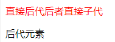
3.9.5 属性选择器¶
可以为拥有指定属性的 HTML 元素设置样式，而不仅限于 class 和 id 属性。
语法：
[属性名]{属性: 值;
把具有id属性和class属性的标签选中
[id][class] {
color: blue;
}
<div class="one">123</div>
<div class="one" id="two">456</div>
<div class="one" name="username">789</div>
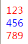
属性选择器其他选择方式
3.9.5.1 属性选择器 =¶
1. [属性=值]{
}
/*属性赋值*/
[class="two"]{
color: crimson;
}
选择有class属性器属性值为two的标签
3.9.5.2 属性选择器 ^=¶
2. [属性^=值]
[class^="two"] {
color: darkblue;
}
选择有calss属性且以two开头的标签
3.9.5.3 属性选择器 $=¶
[class$="two"] {
color: darkblue;
}
选择有calss属性且以two结束的标签
3.9.5.4 属性选择器 *=¶
[class*="two"] {
color: darkblue;
}
选择有class属性且只要标签中包含two就行
3.10 伪类选择器¶
结构伪类是CSS3新增的类型选择器，利用DOM树实现元素过滤，通过文档结构的相互关系来匹配元素，可以减少class和id属性的定义，使文档变得更加简洁
3.10.1 root¶
选择元素所在文档的根元素。在(X)HTML文档中，根元素始终是html元素。
3.10.2 not¶
否定选择器，和jQuery中的:not选择器一模一样，可以选择除某个元素之外的所有元素。
<body>
<div id="header">页头</div>
<div id="page">页体</div>
<div id="footer">页脚</div>
</body>
div{
padding: 10px 20px;
min-height: 50px;
}
div:not([id="footer"]){
background: pink;
}
3.10.3 empty¶
用来选择没有任何内容的元素，这里没有内容指的是一点内容都没有，哪怕是一个空格都不行
<body>
<div>我这里有内容</div>
<div> </div><!-- 我这里有一个空格 -->
<div></div><!-- 我这里任何内容都没有 -->
</body>
div {
min-height: 30px;
}
div:empty {
background-color: green;
}
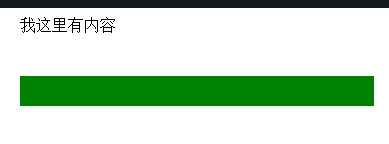
3.10.4 first-child¶
选择F的第一个子元素(所有第一个子元素都会被选择) ,这里作为F(selector1)的第一个子元素的有 span、div里的p、ul的第一个li
<body>
<div id="selector1">
<span>我是第一个span</span>
<p>我是第一个p，在span后面</p>
<div><p>第二个p</p></div>
<p>第三个p</p>
<p>第四个p</p>
<em>I am em</em>
<p>iewnvk</p>
<ul>
<li>1</li>
<li>2</li>
<li>3</li>
<li>4</li>
<li>5</li>
</ul>
</div>
</body>
#selector1 :first-child{
color: pink;
}
first-child的冒号要与前面的元素有一个空格的距离，否则它会把父元素里所有的子元素都选上
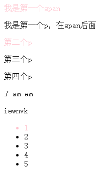
3.10.5 last-child¶
选择最后一个子元素 各种变化和:first-child一样，不再举例。
3.10.6 nth-child(n)¶
用来定位某父元素的一个或多个特定的子元素。其中“n”是参数，可以是整数值(1,2,3,4)，也可以是表达式(2n+1、-n+5)和关键词(odd、even)，参数n的起始值始终是1。也就是说，参数n的值为0时，选择器将选择不到任何匹配的元素。
- tr:nth-child(2n+1):匹配奇数行的tr
- tr:nth-child(2n):匹配偶数行的tr
- tr:nth-child(odd):匹配奇数行的tr
- tr:nth-child(even):匹配偶数行的tr
- tr:nth-child(4):匹配第四行的tr
<body>
<ol>
<li>item1</li>
<li>item2</li>
<li>item3</li>
<li>item4</li>
<li>item5</li>
<li>item6</li>
<li>item7</li>
<li>item8</li>
<li>item9</li>
<li>item10</li>
</ol>
</body>
ol > li:nth-child(2n-1){
background: pink;
}
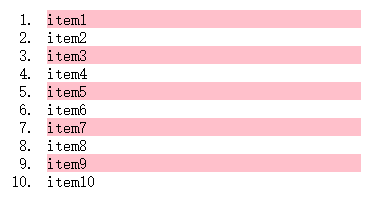
3.10.7 nth-child(n)¶
选择在其父元素中倒数第n个位置的元素或特定某元素。 计算顺序与:nth-child不同，其余用法相同，不再举例。
3.10.8 first-of-type¶
选择器类似于“:first-child”选择器，不同之处就是指定了元素的类型,其主要用来定位一个父元素下的某个类型的第一个子元素。 在E:first-of-type功能类似于E:nth-of-type(1)
<body>
<div class="wrapper">
<p>我是第一个段落</p>
<p>我是第二个段落</p>
<div>我是第一个Div元素</div>
<div>我是第二个Div元素</div>
<p>我是第三个段落</p>
<p>我是第四个段落</p>
<div>我是第三个Div元素</div>
<div>我是第四个Div元素</div>
</div>
</body>
.wrapper > p,
.wrapper > div {
margin: 10px 0;
background:#89c3eb;
color: #fff;
padding: 5px;
}
.wrapper > div:first-of-type {
background: #928178;
}
3.10.9 last-of-type¶
选择器和“:first-of-type”选择器功能是一样的，不同的是他选择是父元素下的某个类型的最后一个子元素。不再举例
3.10.10 nth-of-type(n)¶
选择器和“:nth-child(n)”选择器非常类似，不同的是它只计算父元素中指定的某种类型的子元素[即E:nth-of-type(n)]。当某个元素中的子元素不单是同一种类型的子元素时，使用“:nth-of-type(n)”选择器来定位于父元素中某种类型的子元素是非常方便和有用的。在“:nth-of-type(n)”选择器中的“n”和“:nth-child(n)”选择器中的“n”参数也一样，可以是具体的整数，也可以是表达式，还可以是关键词。
<body>
<div class="wrapper">
<div>我是一个Div元素</div>
<p>我是一个段落元素</p>
<div>我是一个Div元素</div>
<p>我是一个段落</p>
<div>我是一个Div元素</div>
<p>我是一个段落</p>
<div>我是一个Div元素</div>
<p>我是一个段落</p>
<div>我是一个Div元素</div>
<p>我是一个段落</p>
<div>我是一个Div元素</div>
<p>我是一个段落</p>
<div>我是一个Div元素</div>
<p>我是一个段落</p>
<div>我是一个Div元素</div>
<p>我是一个段落</p>
</div>
</body>
.wrapper > div:nth-of-type(odd),
.wrapper > p:nth-of-type(even){
background: #59b9c6;
}
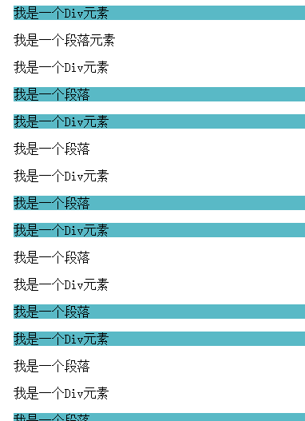
3.10.11 nth-last-of-type(n)¶
选择器和“:nth-of-type(n)”选择器是一样的，选择父元素中指定的某种子元素类型，但它的起始方向是从最后一个子元素开始，而且它的使用方法与“:nth-last-child(n)”选择器一样，不再举例。
3.10.12 only-child¶
匹配的元素的父元素中有且仅有一个子元素。【E:only-child】
<body>
<ul>
<li>Item1</li>
<li>Item2</li>
<li>Item3</li>
</ul>
<ul>
<li>Item1</li>
</ul>
<ol>
<li>Item1</li>
</ol>
<ol>
<li>Item1</li>
<li>Item2</li>
<li>Item3</li>
</ol>
</body>
li {
background: #84b9cb;
padding: 10px;
margin-bottom: 5px;
}
li:only-child {
background: #a99e93;
}
3.10.13 only-of-type¶
选择其父元素只包含一个同类型的子元素 【表示一个元素有很多个子元素，而其中只有一种类型的子元素是唯一的，使用“:only-of-type”选择器就可以选中这个元素中的唯一一个类型子元素。】
<body>
<div class="wrapper">
<p>我是一个段落</p>
<p>我是一个段落</p>
<p>我是一个段落</p>
</div>
<div class="wrapper">
<p>我是一个段落</p>
</div>
<div class="wrapper">
<div>我是一个Div元素</div>
<p>我是一个段落</p>
<div>我是一个Div元素</div>
</div>
</body>
.wrapper {
border: 1px solid #ccc;
padding: 10px;
width: 500px;
margin: 10px auto;
}
.wrapper p:only-of-type{
background: #84b9cb;
}
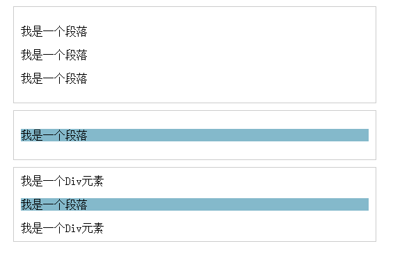
3.10.14 link_visited¶
:link表示未访问的超链接，visite表示已访问的。
<body>
<a href="#">我未访问</a>
<a href="##">我已访问</a>
</body>
a:link{
color: pink;
font-size: 20px;
}
a:visited{
color: #7b8d42;
font-size: 20px;
}
3.10.15 hover¶
鼠标移动到链接，不仅限于链接，可用于页面中的任何元素（IE6中仅可用于链接）
<body>
<input type="text" />
</body>
input:hover{
height: 100px;
background-color: #c099a0;
}

鼠标放上去效果
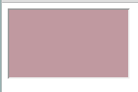
3.10.16 active¶
被激活时的状态，不仅限于链接，可用于任何具有tabindex属性的元素， 对a标签来说就是鼠标按下去的时候 在CSS中，a:hover必须置于a:link和a:visited后才生效，a:active必须置于a:hover后才生效。
<body>
<a href="#">我是链接</a>
</body>
a:active {color:yellow;}
3.10.17 focus¶
用于设置获取焦点时的样式，不仅限于链接
<body>
<input type="text" />
</body>
input:focus{
background-color: #93ca76;
}
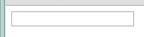
获取焦点后：
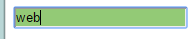
3.10.18 enabled/disabled¶
在Web的表单中，有些表单元素有可用（“:enabled”）和不可用（“:disabled”）状态，比如输入框，密码框，复选框等。在默认情况之下，这些表单元素都处在可用状态。那么我们可以通过伪选择器“:enabled”对这些表单元素设置样式。
<body>
<form action="#">
<div>
<label for="enabled">可用输入框:</label>
<input type="text" id="enabled" />
</div>
<div>
<label for="disabled">禁用输入框:</label>
<input type="text" id="disabled" disabled="disabled" />
</div>
</form>
</body>
div {
margin: 30px;
}
input[type="text"]:enabled{
border:3px solid #8491c3;
box-shadow: 0 0 5px #8491c3;
}
input[type="text"]:disabled{
box-shadow: none;
}
3.10.19 checked¶
在表单元素中，单选按钮和复选按钮都具有选中和未选中状态。在CSS3中可以通过状态选择器“:checked”配合其他标签实现自定义样式。而“:checked”表示的是选中状态。
<form action="#">
<div class="wrapper">
<div class="box">
<input type="radio" checked="checked" id="boy" name="1" /><span></span>
</div>
<label for="boy">男</label>
</div>
<div class="wrapper">
<div class="box">
<input type="radio" id="girl" name="1" /><span></span>
</div>
<label for="girl">女</label>
</div>
</form>
form {
border: 1px solid #ccc;
padding: 20px;
width: 300px;
margin: 30px auto;
}
.wrapper {
margin-bottom: 10px;
}
.box {
display: inline-block;
width: 30px;
height: 30px;
margin-right: 10px;
position: relative;
background: orange;
vertical-align: middle;
border-radius: 100%;
}
.box input {
opacity: 0;
position: absolute;
top:0;
left:0;
width: 100%;
height:100%;
z-index:100;/*使input按钮在span的上一层，不加点击区域会出现不灵敏*/
}
.box span {
display: block;
width: 10px;
height: 10px;
border-radius: 100%;
position: absolute;
background: #fff;
top: 50%;
left:50%;
margin: -5px 0 0 -5px;
z-index:1;
}
input[type="radio"] + span {
opacity: 0;
}
input[type="radio"]:checked + span {
opacity: 1;
}
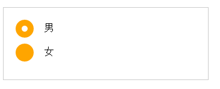
3.10.20 read-only¶
用来指定处于只读状态元素的样式。
<form action="#">
<div>
<label for="name">姓名:</label>
<input type="text" name="name" id="name" placeholder="大漠" />
</div>
<div>
<label for="address">地址:</label>
<input type="text" name="address" id="address" placeholder="中国上海" readonly="readonly" />
</div>
<div>
<label for="comment">评论：</label>
<textarea name="comment" id="" cols="30" rows="10" readonly="readonly"></textarea>
</div>
</form>
form {
width: 300px;
padding: 10px;
border: 1px solid #ccc;
margin: 50px auto;
}
form > div {
margin-bottom: 10px;
}
input[type="text"]{
border: 1px solid orange;
padding: 5px;
background: #fff;
border-radius: 5px;
}
input[type="text"]:-moz-read-only{
border-color: #ccc;
}
input[type="text"]:read-only{
border-color: #ccc;
}
textarea:-moz-read-only{
border: 1px solid #ccc;
height: 50px;
resize: none;
background: #eee;
}
textarea:read-only {
border: 1px solid #ccc;
height: 50px;
resize: none;
background: #eee;
}
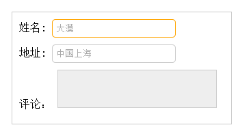
3.10.21 read-write¶
用来指定当元素处于非只读状态时的样式。
<form action="#">
<div>
<label for="name">姓名:</label>
<input type="text" name="name" id="name" placeholder="大漠" />
</div>
<div>
<label for="address">地址:</label>
<input type="text" name="address" id="address" placeholder="中国上海" readonly="readonly" />
</div>
</form>
form {
width: 300px;
padding: 10px;
border: 1px solid #ccc;
margin: 50px auto;
}
form > div {
margin-bottom: 10px;
}
input[type="text"]{
border: 1px solid orange;
padding: 5px;
background: #fff;
border-radius: 5px;
}
input[type="text"]:-moz-read-only{
border-color: #ccc;
}
input[type="text"]:read-only{
border-color: #ccc;
}
input[type="text"]:-moz-read-write{
border:2px solid red;
}
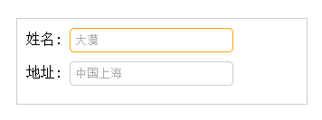
4. CSS 其他¶
4.1 元素显示方式¶
块级元素，行内元素，行内块元素
4.1.1 块级元素¶
代表：
div,p,ul,ol,dl,li,dd,dt,h1...h6...
特点:
1. 块级元素要独占一行显示
2. 块级元素默认宽度与父元素的宽度一致
3. 块级元素可以设置宽度和高度
4.1.2 行内元素¶
代表：
span,a,font,strong,i,s....
特点：
1. 行内元素可以在一行上显示
2. 行内元素不能设置高度和宽度
3. 设置宽度width 无效。
4. 设置高度height 无效，可以通过line-height来设置。
5. 设置margin 只有左右margin有效，上下无效。
6. 设置padding 只有左右padding有效，上下则无效。注意元素范围是增大了，但是对元素周围的内容是没影响的。
4.1.3 行内块元素¶
代表：
img,input.....
特点：
1. 行内元素可以在一行上显示
2. 行内元素可以设置高度和宽度
4.2 元素转换¶
4.2.1 转化为块级元素¶
转化为块级元素（以块级元素的方式去显示）,语法如下：
display：block；
a {
width: 300px; #是不生效的，因为a是行内元素，不能设置高度和宽度
height: 300px; #是不生效的，因为a是行内元素，不能设置高度和宽度
background-color: red;
}
<a href="#">行内元素</a>

改之后
a {
width: 300px;
height: 300px;
background-color: red;
/*转化为块元素*/
display: block; #将行内元素a转为块级元素，就可以设置高度和宽度
}
<a href="#">行内元素</a>
<a href="#">行内元素</a>
4.2.2 转化为行内块元素¶
语法：
display：inline-block；
a {
width: 300px; #是不生效的，因为a是行内元素，不能设置高度和宽度
height: 300px; #是不生效的，因为a是行内元素，不能设置高度和宽度
background-color: red;
}
<a href="#">行内元素</a>
a {
width: 300px;
height: 300px;
background-color: red;
/*转化为块元素*/
display: inline-block; #将行内元素a转为行内块级元素，就可以设置高度和宽度
}
<a href="#">行内元素</a>
<a href="#">行内元素</a>
4.2.3 转化为行内元素¶
语法:
display：inline；
a{
width: 100px;
height: 100px;
background-color: red;
/*转化为块元素*/
/*display: block;*/
/*display: inline-block;*/
display: inline;
}
div{
background-color: red;
display: inline;
width: 100px; #都不启作用了，因为div被转为行内元素了
height: 100px; #都不启作用了，因为div被转为行内元素了
}
<div>我是行内元素</div>
#原本这个div是要独占一行的，但是div被上面css改为行内元素了，所以和其他行内元素在一行显示
<a href="#">行内元素</a>
<a href="#">行内元素</a>
注意
1. 可以把行内元素，块元素转化成任何一直元素 2. 行内块元素转化成行内元素没有效果 3. 一般情况下会将行内元素转换
4.2.4 行内/块元素区别¶
- 块级：块级元素会独占一行，默认情况下宽度自动填满其父元素宽度,
- 行内：行内元素不会独占一行，相邻的行内元素会排在同一行。其宽度随内容的变化而变化。
- 块级：块级元素可以设置宽高
- 行内：行内元素不可以设置宽高
- 块级：块级元素可以设置margin，padding
- 行内：行内元素水平方向的margin-left; margin-right; padding-left; padding-right;可以生效。但是竖直方向的margin-bottom; margin-top; padding-top; padding-bottom;却不能生效。
- 块级：display:block;
- 行内：display:inline;可以通过修改display属性来切换块级元素和行内元素
4.3 CSS特性¶
4.3.1 层叠性¶
在权重相同的情况下，用一个标签中样式发生冲突，后面的样式会将前面的样式给覆盖掉。样式与定义的顺序有关，与调用的顺序无关
.one{
color: red;
}
.two{
color: blue;
}
<div class="one two">文字</div>
只跟CSS中调用的样式.one 和 .two的顺序有关和div的class后面的one和two顺序无关，调试网页的时候发下样式表格中的red模式已经被删除了。
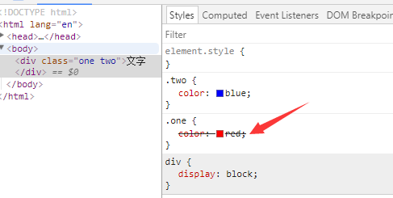
4.3.2 继承性¶
- 在默认情况下，如果子元素没有设置样式，那么子元素会继承父元素的样式
- 只能发生在标签嵌套结构中
- 宽度和高度不能被继承，只是块元素特点。
可继承的属性
- color
- 与font属相相关的都可以继承如font-sizes
- line-height可以被继承
- text-align可以被继承
4.3.3 继承性中特殊标签¶
- a标签不能直接接受父元素中的文字颜色影响
- 标题标签(h1~h6)不能直接接受父元素中的文字大小影响，h1变为2em（2倍文字大小）
4.3.4 权重¶
1. 优先权（权重）
标签选择器< 类选择器< ID选择器<行内样式<!important
权重值 10 100 1000 10000 10000+
2. 继承权重为0
没有自己样式就继承，有自己样式就覆盖
3. 权重可以叠加
div p{
color: red;
}
p{
color:blue;
}
总结
1. 通过选择器指向的是同一个标签，如果权重不一样，那么只要考虑优先级。 2. 通过选择器指向的是同一个标签，如果权重一样，那么只考虑层叠性。
4.4 背景¶
4.4.1 背景颜色¶
background-color 设置颜色 默认值是：transparent 透明色
4.4.2 背景图片¶
background-image 设置背景图片
1. none/url（使用绝对或者相对路径）
background-image: url("1.png");
4.4.3 背景平铺¶
background-repeat 设置背景图片平铺 1. repeat 默认值 2. no-repeat 不平铺 3. repeat-x 横向平铺 4. repeat-y 纵向平铺
4.4.4 背景定位¶
background-position 设置背景图片位置
1. length 百分比|有浮点数字和单位标识符组成的长度
2. position top|center|bottom|left|right
background-position: right top; 设置背景图片为右上角
注意
1. 当背景图片设置一个值的时候，第二个默认是center。 background-position: right； 此时图片就是右中显示 2. 当背景图片位置出现具体数字的时候，第一个值代表水平方向，第二只代表垂直方向。
4.4.5 背景图片连写¶
background: red url("logo.png") no-repeat right top;
注意：
1. 该属性联写中没有个数限制
2. 该属性中没有顺便限制
4.5 行高¶
4.5.1 行高特性¶
- 行高属于文字的属性
-
行高=文字大小+上间距+下间距（默认行高是18px,文字大小是16px，上间距和下间距都是1px）
-
行高的作用：
- 设置文字垂直方向中有间距
- 文字垂直居中(让行高=容器的高度就可以了)
-
影响行高
- 文字大小可以改变行高
- 文字字体也可以改变行高
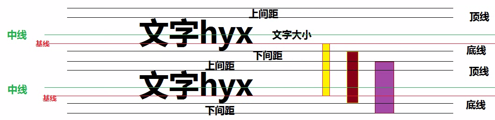
4.5.2 行高单位¶
- 如何给单独一个标签设置行高
px ：行高值就是设置的大小,与文字大小没有关系 推荐使用 em ：行高值=设置的行高*文字大小 百分比 : 行高值=设置的行高*文字大小 不带单位 : 行高值=设置的行高*文字大小
- 如果给父元素设置行高，子元素行高特点
父px ：子元素的行高=父元素的行高 推荐使用 父em ：子元素的行高=父元素的行高*父元素文字大小（先计算后继承） 父百分比 : 子元素的行高=父元素的行高*父元素文字大小（先计算后继承） 父不带单位 : 子元素的行高=父元素的行高*子元素文字大小（先继承后计算）
4.6 盒子模型¶
4.6.1 作用¶
实现网页布局（在网页里面画盒子）
4.6.2 组成¶
边框 border 内边距 padding 盒子中的内容和盒子边框的距离 外边界 margin 盒子与盒子之间的距离
4.6.3 边框¶
4.6.3.1 边框基本设置¶
1. border-style: none; 默认没有边框
a) solid 实线
b) dotted 点线
c) dashed 虚线
d) none 没有边框
2. border-width: 边框宽度
3. border-color: 边框颜色
4. border属性联写中
a) 必须设置border-style
b) 没有书序限制
5. 其他写法
border-left: 2px dotted green; #左边框
border-right: 5px dashed yellow; #右边框
border-top: 3px dotted red; #上边框
border-bottom:5px dashed darkcyan; #下边框
border-left: 5px dashed pink;
等价于
border-left-color: pink;
border-left-style: dashed;
border-left-width: 5px;
4.6.3.2 去边框¶
border：0 none； #0 加上主要是兼容性需要
4.6.3.3 去轮廓¶
outline-style: none; 如input
导航条练习例子
.nav{
height: 50px;
border-top: 1px solid red ;
border-bottom: 1px solid pink ;
background-color: #ddd;
}
.nav a{
text-decoration: none;
heighte: 50px;
display: inline-block;
/*设置行高*/
line-height: 50px;
}
.nav a:hover{
background-color: #ccc;
color: red;
}
<a href="#">首页</a>
<a href="#">设置为首页</a>
Label for id 通过label来当用户点击标签名也可以输入
<label for="um">用户名: </label> <input type="text" class="username" id="um"><br><br>
4.6.4 内边框¶
定义：内容与边框之间的距离
注意：padding值只能移动盒子里面内容。
padding值属性联写： 1. padding: 10px; 表示上右下左（顺时针）的值都是10px 2. padding: 10px 20px; 表示上下10px，左右20px 3. padding: 10px 20px 30px; 表示上10px，右20px，下30px，左20px 4. padding: 10px 20px 30px 40px; 表示上10px，右20px，下30px，左40px
盒子问题
盒子大小问题： 1. 边框和内边界可以改变盒子大小 2. 盒子大小（宽度）= 内容宽度+左右内边距+左右边框 嵌套盒子padding值 1. 继承的盒子，默认不设置宽度的情况下，给子盒子设置padding值在父盒子宽度范围内不会影响子盒子大小， 2. 给子盒子设置padding值在父盒子宽度范围之外，此时子盒子就是变大，此时已经撑出了大盒子。
4.6.5 外边框¶
定义： 盒子与盒子之间距离，移动盒子。
padding属性联写： 与内边距（padding）一样。
外边界不会改变盒子大小
特点:
- 垂直外边距合并（以最大外边距值为准）
- 垂直外边距塌陷。
外边框塌陷解决方法： - 给父元素设置边框 - 给父元素设置overflow: hidden;(由于overflow:hidden触发了元素bfc（格式化上下文）)
4.6.6 默认标签内外边距¶
body,p,h1,h2,h3,h4,h5,h6,ul,ol,dl,li,dd,dt,input{
margin: 0;
padding: 0;
}
4.7 浮动¶
4.7.1 标准流¶
定义： 在页面中标签（元素）默认的显示方式就是标准流的显示方式。
4.7.2 浮动¶
用法:
float: left|right;
特点:
1. 浮动元素不占位置（脱标了<脱离标准流>） 2. 浮动可以让块元素在一行上显示（脱标） 3. 可以进行元素的模式转换（行内）
作用
浮动的出现最初是解决图片文字环绕效果（包裹性）。
2. 让块级元素在一行上显示就使用浮动方式。
1. 制作导航
2. 网页布局
4.7.3 清除浮动¶
4.7.3.1 clear¶
清除方式：
1. 使用clear：left|right|both （不是主流） 在浮动标签后面添加一个clear
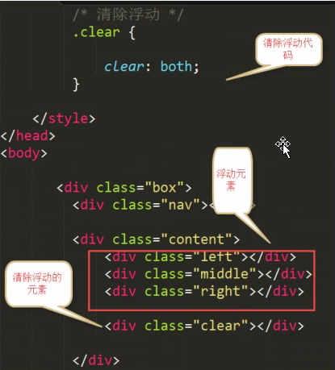
4.7.3.2 hidden¶
父元素设置overflow：hidden；
overflow：hidden；还可以将超出父元素的部分进行隐藏
4.7.3.3 伪元素¶
使用伪元素清除浮动（推荐）
单伪元素清除浮动
.clearfix:after {
content: " ";
height: 0;
line-height: 0;
display: block;
clear: both;
visibility: hidden;
}
.clearfix {
/*兼容IE*/
zomm: 1;
}
或者（双伪元素）清除浮动
.clearfix:before .clearfix:after {
content: " ";
height: 0;
line-height: 0;
display: block;
clear: both;
visibility: hidden;
}
.clearfix {
/*兼容IE*/
zomm: 1;
}
清除浮动的时机
1. 父容器没有高度 2. 父容器中所有子元素都设置了浮动 以上两个都满足了，才能考虑是否清除浮动
4.7.4 初始化¶
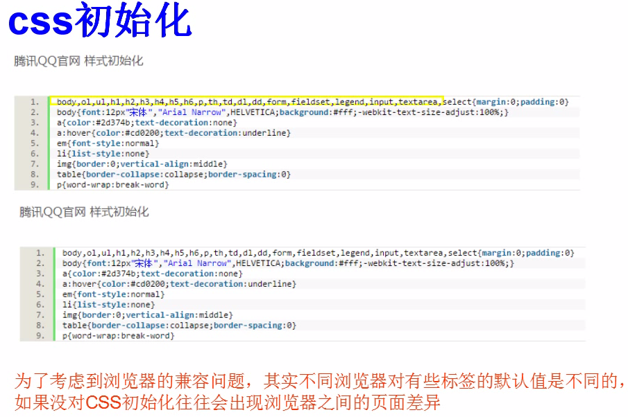
4.7.5 overflow介绍¶
overflow：visible; 默认值----- /*默认值*/ overflow: hidden; 超出部分隐藏------/*将超出部分隐藏*/ overflow: scroll; 设置滚动条----/*超不超出都会有滚动条。超出会能拖动滚动条，不超出的不能拖动滚动条*/ overflow: auto; 自动-----/*超出部分自动出现滚动，不超出的情况不出现滚动条*/
4.7.6 伪元素¶
4.7.6.1 语法¶
选择器:伪元素{属性:值;}
4.7.6.2 用法¶
1. first-line 伪元素
"first-line" 伪元素用于向某个选择器中的文字的首行添加特殊样式：
p{
font-size: 12pt;
}
p:first-line{
color: #0000FF;
font-variant: small-caps;
}
2. :first-letter 伪元素
first-letter 伪元素用于向某个选择器中的文本的首字母添加特殊的样式：
p{
font-size: 12pt;
}
p:first-letter{
font-size: 200%;
float: left;
}
3. :before 伪元素
before 伪元素可用于在某个元素之前插入某些内容。
下面的样式会在标题之前播放音频：
h1:before{
content:url(beep.wav);
}
4. :after 伪元素
after 伪类可用于在某个元素之后插入某些内容。
下面的样式会在标题之后播放音频：
h1:after{
content: url(beep.wav);
}
<!DOCTYPE html>
<html lang="en">
<head>
<meta charset="UTF-8">
<title>Title</title>
<style type="text/css">
.box {
width: 200px;
height: 300px;
border: 1px solid red;
}
div:before,div:after { 在div之前和之后有伪元素出现
content: "这是一个span";
background-color: pink;
width: 120px;
height: 30px;
display: block;
}
/*选择区域*/
div::selection {
background-color: red; 当选择时候，文字显示红色，松开就显示原来，颜色字体
}
</style>
</head>
<body>
<div class="box">
这个是正文DIV <br>
这个是正文DIV <br>
这个是正文DIV <br>
</div>
</body>
</html>
大部分伪元素本来是::也就是两个冒号的，但是很多浏览器不支持，所以使用了：也就是一个冒号， 但是有的伪元素必须使用：：，而伪类是使用：也就是一个冒号如div:hover{.....}
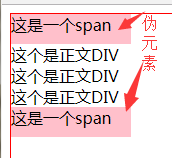 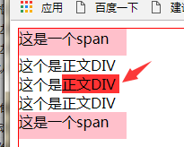
4.8 定位¶
4.8.1 属性¶
通过定位可以移动元素位置，通过使用 position 属性，我们可以选择 4 种不同类型的定位，这会影响元素框生成的方式。
position 属性值的含义： 1. static 静态定位 元素框正常生成。块级元素生成一个矩形框，作为文档流的一部分，行内元素则会创建一个或多个行框，置于其父元素中。 2. relative 相对定位 元素框偏移某个距离。元素仍保持其未定位前的形状，它原本所占的空间仍保留。 3. absolute 绝对定位 元素框从文档流完全删除，并相对于其包含块定位。包含块可能是文档中的另一个元素或者是初始包含块。元素原先在正常文档流中所占的空间会关闭，就好像元素原来不存在一样。元素定位后生成一个块级框，而不论原来它在正常流中生成何种类型的框。 4. fixed 元素框的表现类似于将 position 设置为 absolute，不过其包含块是视窗本身。 提示：相对定位实际上被看作普通流定位模型的一部分，因为元素的位置相对于它在普通流中的位置。
4.8.2 使用场景和特点¶
当页面中出现盒子压盒子时候，推荐使用定位。
定位体现的是元素之间的层级关系。
4.8.3 静态定位¶
- 语法
position: static; left： 10px; top: 50px; bottom: 10px; right: 10px;
1. 静态定位不能移动元素位置。 2. 静态定位的元素就是标准流元素的显示方式。
4.8.4 绝对定位¶
- 语法：
position: absolute;
- 特点
1. 如果一个子元素设置了绝对定位，如果该子元素的父元素设置了静态定位或者没有定位，那么当前子元素是以body（浏览器）左上角作为参照进行移动。 2. 如果一个子元素设置了绝对定位，如果该子元素的父元素设置了除静态定位以外的其他定位，那么当前绝对定位的子元素会以父元素左上角为参照进行移动。 3. 脱离文档流。不占位置。 4. 设置为绝对定位的元素框从文档流完全删除，并相对于其包含块定位，包含块可能是文档中的另一个元素或者是初始包含块。元素原先在正常文档流中所占的空间会关闭，就好像该元素原来不存在一样。元素定位后生成一个块级框，而不论原来它在正常流中生成何种类型的框。
例子
#box_relative {
position: absolute;
left: 30px;
top: 20px;
}
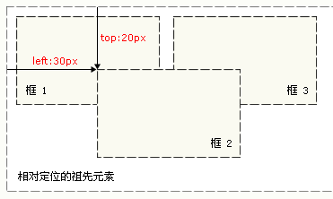
4.8.5 相对定位¶
- 语法
position: relative;
- 特点
1. 相对定位的元素占位置 2. 相对定位元素是以元素的原来的位置为参照设置定位。 3. 相对定位不能实现模式转换 4. 设置为相对定位的元素框会偏移某个距离。元素仍然保持其未定位前的形状，它原本所占的空间仍保留 5. 一般情况下要设置 子绝（绝对定位）父相（相对定位）
#box_relative {
position: relative;
left: 30px;
top: 20px;
}
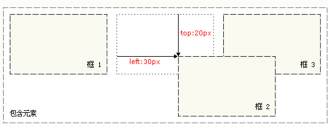
4.8.6 固定定位¶
- 语法
position: fixed;
- 特点
1. 固定定位的元素始终以body（浏览器）可视区域为参照设置定位 2. 固定定位的元素脱标不占位置 3. 固定定位的元素可以实现模式转换
4.8.7 Z-index¶
- 定位元素的特点
1. 只有（除了静态定位）定位的元素有层级关系。像浮动元素什么的都没有层级关系 2. 通过 z-index改变层级关系
- 层级关系
1. 当给你一个元素设置了定位，该元素默认的层级z-index值是auto(0) 2. 当z-index值相同的情况下，那么最后定位的元素层级要高于前面定位元素（后来居上原则） 3. 当z-index值不相同的情况下，那么z-index值越高，层级关系就越高 4. 如果子元素的父元素设置了z-index值，那么父元素的z-index值的越大，该子元素的层级越高
4.8.8 定位盒子居中¶
标准流的盒子居中显示：margin：0 auto; 只是让标准流盒子居中显示，绝对定位的盒子居中显示：
1. left: 50%; 父元素宽度一半 2. margin-left: -元素自己宽度一半(其中符号-表示向左移动，代表方向) 也就是先按照父元素的宽度向右移动到父元素中间，然后自身像左移动一半。
4.9 其他设置¶
4.9.1 CSS 规范¶
- 行内元素尽量里面包含行内元素 不推荐a里面包含h标签
- 有些块级元素不能包含其他块级元素。标题标签，段落标签不能包含div，尤其是P标签不能包含div
4.9.2 脱标流¶
网页布局避免脱标流
1. 网页布局优先考虑标准流 2. 然后考虑使用浮动 3. 最后使用定位 4. 元素模式转换，必须使用display
4.9.3 vertical-align属性介绍¶
1. text-align 水平对齐
2. vertical-align 垂直对齐
3. 默认行内块元素(img,input)，有默认的vertical-align属性值
vertical-align:
baseline ; 默认值
top ; 顶部对齐
middle ; 中部对齐
bottom ; 底部对齐
4.9.4 隐藏方式¶
overflow： hidden; 将溢出部分隐藏 display: none; 元素隐藏，隐藏后元素不占位置 display: block; 显示元素 visibility: hidden 元素隐藏，隐藏后元素占位置
4.9.5 log内容移除¶
1. logo一般推荐给a标签设置背景图片 2. logo中a标签最好设置文字 3. text-indent: -1000px;这个值是负数随便写（首行缩进）
4.9.6 精灵图¶
定义: 是一种处理网页特殊背景图片
它将一个页面的涉及到的所有零星背景图像都集中到一张大图中，然后将大图应用于网页，这样当用户访问该网页的时候，只要向服务器发送一次请求，网页中的背景图像即可全部展示出来，通常情况下，这个由很多小的背景图像合成大图称为精灵图。
使用：
1. 给元素设置精灵图为背景图片 2. 通过backgroud-position移动背景图片
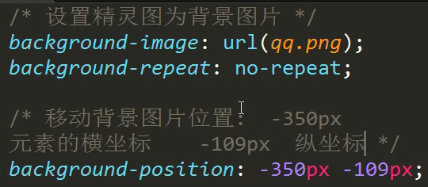
4.9.7 滑动门¶
定义：根据文本自适应大小，根据背景的层叠性制作，并允许他们在彼此之上进行滑动，以创造出一些特殊的效果。
注意：
1. 制作网页导航。 2. 滑动门导航使用背景图片制作。 3. 滑动门导航内容不能设置宽度。 4. 左边固定不动的部分，背景左对齐 5. 右边随着内容变宽的部分，背景右对齐
div {
float: left;
}
.left {
width: 9px;
height: 64px;
background: url("l.png") no-repeat;
}
.middle {
height: 64px;
line-height: 64px;
background: url("m.png");
}
.right {
width: 9px;
height: 64px;
background: url("r.png") no-repeat;
}
<div class="left"></div>
<div class="middle">文字111111111111111</div> 这个文字越多中间的就被撑开越宽
<div class="right"></div>
4.9.8 图标字体¶
http://www.iconfont.cn/collections
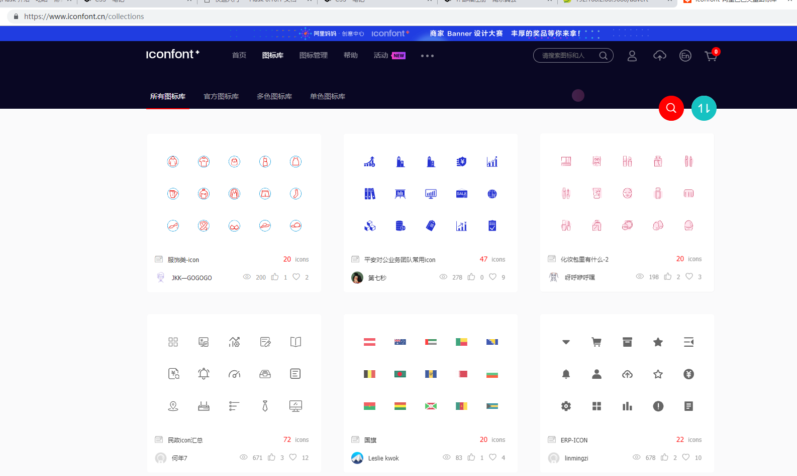
<!DOCTYPE html>
<html lang="en">
<head>
<meta charset="UTF-8">
<title>Title</title>
<link rel="stylesheet" href="iconfont.css"> 链接引用
</head>
<body>
<span class="iconfont"></span>
<span class="iconfont"></span>
<span class="iconfont"></span>
<span class="iconfont"></span>
<span class="iconfont"></span>
<span class="iconfont"></span>
<span class="iconfont"></span>
</body>
</html>
访问abc.html就显示右侧的图标，参考上图的那三个demohtml，里面有具体用法
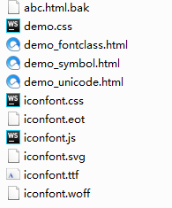 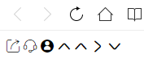